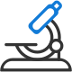
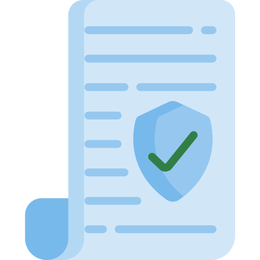
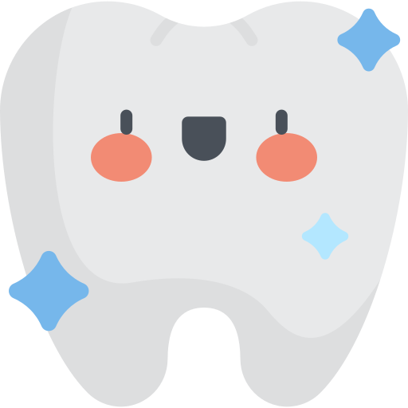

Мы предлагаем полный спектр стоматологических услуг, индивидуальный подход, а также сочетание классических и инновационных методов лечения позволяет максимальных результатов при наличии проблемы любой сложности. В клинике отделение для приема пациентов с острой болью.
Оставьте страхи в прошлом. Доверьте здоровье своих зубов профессионалам из стоматологии "МЕДЕЯ"!
ПОЧЕМУ ВЫБИРАЮТ НАС
Доступные цены
Гарантия на лечение
Лечение без боли
Бесплатная парковка
Купоны GILMON

Новейшие технологии
УСЛУГИ
Консультация и диагностика
Лечение зубов (кариеса, пульпита, периодонтита)
Профгигиена полости рта
Эстетическая реставрация зубов
Протезирование зубов:
Коронки на зуб
Мостовидные протезы
Металлокерамические коронки
Цельнолитые коронки
Съёмные протезы ( Ацетал, Акрифри)
ГосГарантии

Территориальная программа Гос-Гарантий
Приказ Министерства здравоохранения Российской Федерации от 30 декабря 2014 г. № 956
ПРИКАЗ № 786н от 31 июля 2020 года Регистрационный № 60188 от 2 октября 2020 года Об утверждении Порядка оказания медицинской помощи взрослому населению при стоматологических заболеваниях
О ДОВЕРИИ
Наша главная цель - долгосрочные доверительные отношения с нашими пациентами. Поэтому мы работаем только на лучший результат. Нам доверяют и мы это ценим.

Мы выполняем качественно свою работу и с уважением относимся ко всем пожеланием наших клиентов. Многолетний опыт работы и высококвалифицированные специалисты обеспечивают высокий уровень нашего стоматологического кабинета.
Каждый день мы помогаем пациентам справляться с проблемами ротовой полости и улучшаем сервис, исходя из ваших пожеланий. Спасибо, что выбрали нас!
Ген.Директор Ольховская С.Х.
НАШИ ВРАЧИ
Муняева Людмила Николаевна
Стоматолог-терапевт
Удостоверение номер 462 от 1 июля 1992 г.Сертификат номер 10056
Масленников Алексей Юрьевич
Стоматолог-ортопед
Диплом ЭВ номер 195005 от 16 июля 1995 г.Сертификат А номер 348002
Ольховская Светлана Харистьевна
Зубной врач
Диплом МТ номер 015373 от 6 июля 1988 г.Сертификат А номер 0742160 10 июня 1999г.
Попова Лариса Петровна
Cтаршая медицинская сестра
Диплом номер 74 БА 0004954 от 30 июня 2008г.Сертификат ПО 77 4270000833 от 8 сентября 2017г.Лицензия номер 74-01-000 784 от 26 ноября 2007 г.